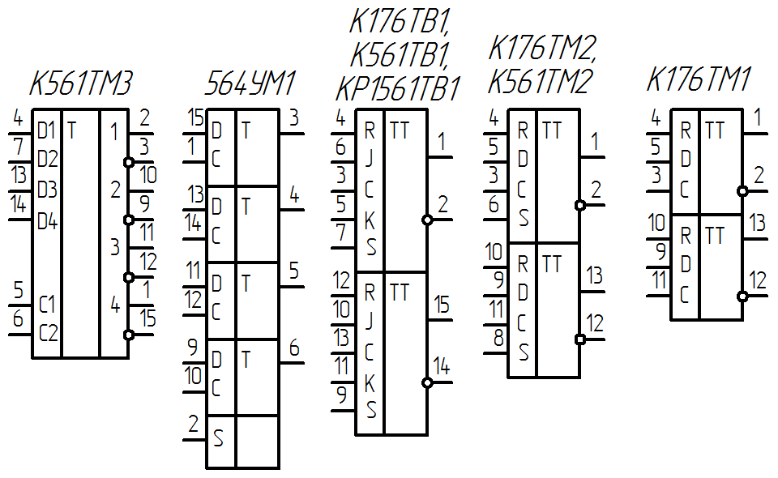
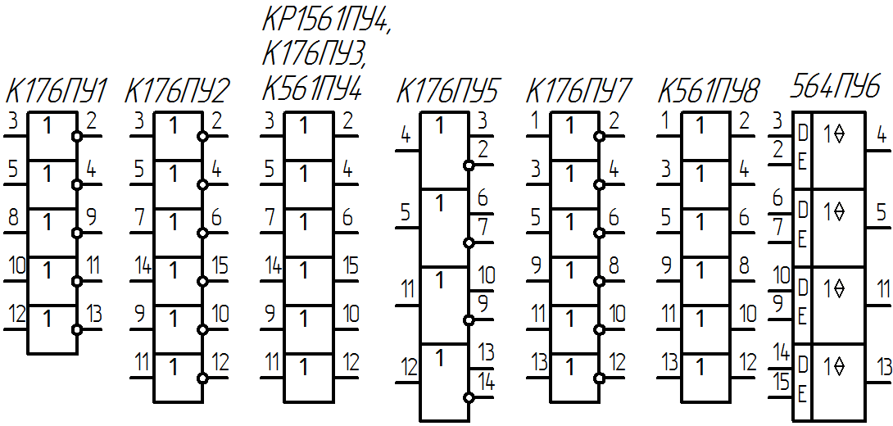
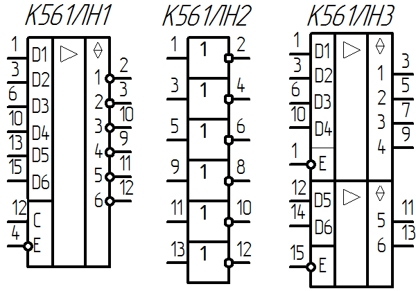

Зарубежные и отечественные
КМОП-микросхемы
| Обозначение микросхемы | Функциональное назначение | |
|---|---|---|
| Отечественное | Зарубежное | |
| Логические элементы | ||
| 164ЛА7, К176ЛА7 |
CD4011 | 4 логических элемента 2И-НЕ |
| 564ЛА7, К561ЛА7 | CD4011A | |
| 164ЛА8, К176ЛА8 | CD4012 | 2 логических элемента 4И-НЕ |
| 564ЛА8, К561ЛА8 | CD4012A | |
| 164ЛА9, К176ЛА9 | CD4023 | 3 логических элемента 3И-НЕ |
| 564ЛА9, К561ЛА9 | CD4023A | |
| КР1561ЛА9 | CD4023BE | |
| 564ЛА10 | CD40107A | 2 логических элемента 2И-НЕ с открытым стоком |
| КР1561ЛА10 | CD40107B | |
| 164ЛЕ5, К176ЛЕ5 | CD4001 | 4 логических элемента 2ИЛИ-НЕ |
| 564ЛЕ5, К561ЛЕ5 | CD4001A | |
| КР1561ЛЕ5 | CD4001B | |
| 164ЛЕ6, К176ЛЕ6 | CD4002 | 2 логических элемента 4ИЛИ-НЕ |
| 564ЛЕ6, К561ЛЕ6 | CD4002A | |
| КР1561ЛЕ6 | CD4002B | |
| 164ЛЕ10, К176ЛЕ10 | CD4025 | 3 логических элемента 3ИЛИ-НЕ |
| 564ЛЕ10, К561ЛЕ10 | CD4025A | |
| КР1561ЛЕ10 | CD4025BE | |
| 164ЛИ1, К176ЛИ1 | нет аналога | 9И + элемент НЕ |
| КР1561ЛИ2 | CD4081B | 4 логических элемента 2И |
| 564ЛН1, К561ЛН1 | MC14502A | 6 логических элементов "НЕ" с блокировкой и запретом |
| 564ЛН2, К561ЛН2 | CD4069A | 6 логических элементов "НЕ" |
| К561ЛНЗ | MPD4503BC | 6 повторителей с блокировкой для видеомагнитофонов с 3 состояниями |
| 164ЛП1, К176ЛП1 | CD4007 | Элемент логический универсальный (6 транзисторов) |
| 164ЛП2, К176ЛП2 | CD4030 | 4 логических элемента "исключающее ИЛИ" |
| 564ЛП2, К561ЛП2 | CD4030A | |
| 164ЛП4, К176ЛП4 | CD4000 | 2 логических элемента 3ИЛИ-НЕ и элемент НЕ |
| 164ЛП11, К176ЛП11 | нет аналога | 2 логических элемента 4ИЛИ-НЕ и элемент НЕ |
| 164ЛП12, К176ЛП12 | нет аналога | 2 логических элемента 4И-НЕ и элемент НЕ |
| КР1561ЛП14 | CD4070B | 4 элемента "исключающее ИЛИ" |
| К561ЛС2 | 4 элемента И-ИЛИ | |
| Мультиплексоры | ||
| К561КП1 КР1561КП1 |
2 мультиплексора 4-1 | |
| К561КП2 КР1561КП2 |
Мультиплексор 8-1 | |
| К176ЛС1 | 3 мультиплексора 2-1 | |
| Дешифраторы | ||
| К176ИД1 К561ИД1 |
Дешифратор 4-10 с прямыми выходами | |
| КР1561ИД6 | 2 дешифратора 2-4 с прямыми выходами | |
| КР1561ИД7 | 2 дешифратора 2-4 с инверсными выходами | |
| Преобразователи кода | ||
| К176ИД2 К176ИДЗ |
Преобразователи двоично-десятичного кода в код семисегментного индикатора | |
| 564ИД4 564ИД5 |
Преобразователи двоично-десятичного кода в код семисегментного индикатора | |
| Триггеры | ||
| К176ТВ1 К561 ТВ1 КР1561ТВ1 |
2 JK-триггера | |
| 564ТЛ1, К561ТЛ1 | CD4093A | 4 триггера Шмитта с входной логикой 2И-НЕ |
| КР1561ТЛ1 | CD4093BE | |
| К176ТМ1 | 2 D-триггера | |
| К176ТМ2 К561ТМ2 | 2 D-триггера | |
| К561ТМЗ | 4 D-триггера | |
| К561ТР2 | 4 RS-триггера (Z) | |
| 564УМ1 | 4 D-триггера с увеличенной амплитудой выходного сигнала (4–х линейный усилитель индикации со стробированием по каждому входу) |
|
| Счетчики | ||
| К176ИЕ1 | Шестиразрядный двоичный счетчик | |
| К176ИЕ2 | Пятиразрядный двоичный и десятичный счетчик | |
| К176ИЕЗ | Счетчик-делитель на 6 с выходом на семисегментный индикатор | |
| К176ИЕ4 | Декада с выходом на семисегментный индикатор | |
| К176ИЕ5 | Кварцевый генератор и делитель частоты на 32768 | |
| К176ИЕ8 К561ИЕ8 |
CD4017A | Десятичный счетчик с дешифратором |
| К561ИЕ9 | Двоичный счетчик с дешифратором | |
| К561ИЕ10 КР1561ИЕ10 |
2 четырехразрядных двоичных счетчика | |
| К561ИЕ11 | Четырехразрядный двоичный реверсивный счетчик | |
| К176ИЕ12 | Кварцевый генератор и делители частоты на 32768 и 60 | |
| К176ИЕ13 | Счетчик для часов с будильником | |
| К561ИЕ14 | Четырехразрядный десятичный реверсивный счетчик | |
| КА561ИЕ15А КА561ИЕ15Б | Делитель частоты с переключаемым коэффициентом деления | |
| К561ИЕ16 | 14-разрядный двоичный счетчик | |
| К176ИЕ17 | Счетчик-календарь | |
| К176ИЕ18 | Кварцевый генератор и делители частоты на 32768 и 60 | |
| К561ИЕ19 | Счетчик с переключаемым коэффициентом деления | |
| КР1561ИЕ20 | 12-разрядный двоичный счетчик | |
| КР1561ИЕ21 | Четырехразрядный двоичный синхронный счетчик | Регистры |
| 564ИР1 | 18-разрядный сдвигающий регистр | |
| К176ИР2 К561ИР2 |
2 четырехразрядных сдвигающих регистра | |
| К176ИРЗ | Четырехразрядный сдвигающий регистр | |
| К561ИР6 | Восьмиразрядный сдвигающий регистр (Z) | |
| К561ИР9 | Четырехразрядный сдвигающий регистр | |
| К176ИР10 | 18-разрядный сдвигающий регистр | |
| 564ИР13 | Регистр последовательного приближения | |
| КР1561ИР14 | Четырехразрядный регистр хранения информации (Z) | |
| КР1561ИР15 | Четырехразрядный реверсивный сдвигающий регистр | |
| Преобразователи уровня | ||
| 164ПУ1, К176ПУ1 | нет аналога | 5 преобразователей уровня КМОП-ТТЛ с инверсией |
| К176ПУ2 | CD4009 | 6 преобразователей уровня КМОП-ТТЛ с инверсией |
| К176ПУЗ | CD4010 | 6 преобразователей уровня КМОП-ТТЛ |
| 564ПУ4, К561ПУ4 | CD4050A | 6 преобразователей уровня КМОП-ТТЛ (6 мощных драйверов с защитой от входных перенапряжений) |
| К176ПУ4 | - | |
| КР1561ПУ4 | MC14050B | |
| К176ПУ5 | нет аналога | 4 преобразователя уровня ТТЛ-КМОП с прямым и инверсным выходами |
| 564ПУ6 | CD40109A | 4 преобразователя уровня (4 вентиля с 3 состояниями и индивидуальными запретами) |
| 564ПУ7, К561ПУ7 | нет аналога | 6 преобразователей уровня логической 1 с низкого на высокий с инверсией |
| 564ПУ8, К561ПУ8 | нет аналога | 6 преобразователей уровня логической 1 с низкого на высокий без инверсии |
| 564ПУ9 | CD40116 | 8-разрядный двунаправленный преобразователь уровня для сопряжения ТТЛ-КМОП |
| Прочие | ||
| К561СА1 | 13-входовый сумматор по модулю 2 | |
| 564ЛП13, К561ЛП13 | нет аналога | 3 3-входовых мажоритарных элемента |
| К561ИК1 | 3 мажоритарно-мультиплексорных элемента | |
| 564ИК2 | Устройство управлений пятиразрядным индикатором | |
| К176ИМ1 К561ИМ1 |
Четырехразрядный двоичный сумматор | |
| К561ИП2 | Элемент сравнения четырехразрядных чисел | |
| К176КТ1 | 4 ключа | |
| К561КТЗ КР1561КТЗ |
4 ключа | |
| КР1561АГ1 | 2 ждущих мультивибратора | |
Таблица 2
| Зарубежные | Отечественные |
|---|---|
| CD4000, MC14000 | 164, 176 |
| CD4000A,MC14000A | 564, 561 |
| CD4000B, MC14000B | 1561, КР1561 |


{kind=link}

{kind=link}
